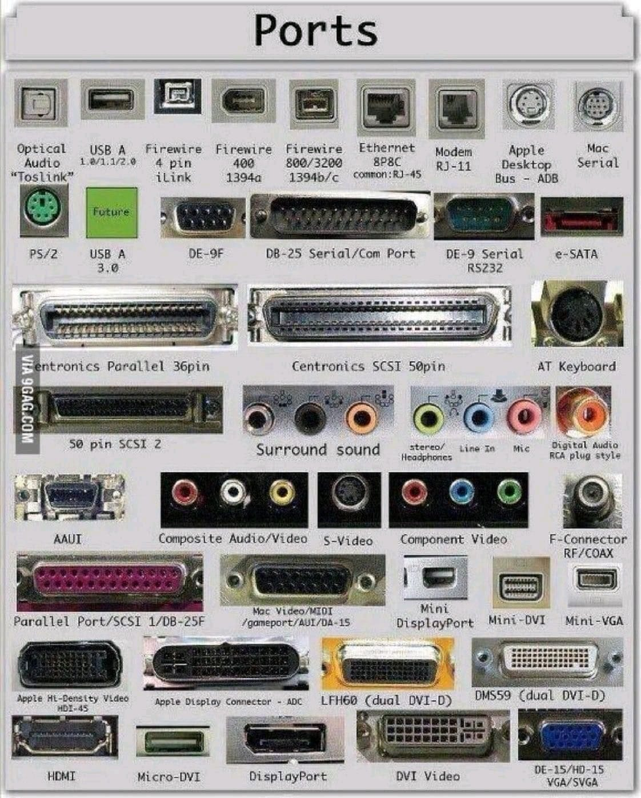

Communication Protocols¶
A communication protocol is a system of rules governing how two entities are to communicate with each other. Often it is useful to separate the protocol into various layers, governing different aspects of the communication. Some layers may be general in nature, and applicable to many systems, while others may be very application specific.
A communication protocol is sometimes linked to a specific physical means of transmission, e.g. som specific voltage levels on the wires connecting two devices. Other protocols can be agnostic to the transport medium.
Note
A interesting example of a protocol which is agnostic to the physical layer is the internet protocol (IP) which is fundamental in the operation of the Internet. Several standards exists for how the IP data could be transmitted, and during normal internet usage the traffic likely passes through multiple different physical layers such as ethernet (WiFi, or cables), or LTE, WiMax. There is even the RFC 1149 standard for IP over Avian Carriers, which describes how IP traffic should be carried over birds such as pigeons.
A communication protocol is often associated with some physical connector, such as the USB-C, or 8P8C connector. There are many others, but luckily standardization is slowly limiting the number of different ports which are used in consumer electronics.
Why do we need ports? There was a dark era before some protocols are decided…

{kind=link}
Universal Asynchronous Receive-Transmit (UART)¶
Since we have talked about UART a lot in Serial I/O chapter, I will not get into details again. Just some bullet points to know:
Asynchronous: There is no clock pin.
3 pins are required (generally): GND, Tx, Rx. Often times VCC is also included on a separate wire.
Since there is no CLK, the receiver does not know when to start reading. Therefore, we set a bunch of configurations e.g. transmission speed, data package size, start/stop bits type.
To make sure the bit is read correct, it is read in the middle of the bit. Let’s say you set the baud rate as 9600 bits/sec. This means that you send/read 1 bit in every 104 microseconds. So, your receiver does not
digitalRead(RX_pin)immediately after the start bit is received but it reads after 104/2 = 52 microseconds. So lame, I know… but cmon, parity is still in use!Remember to cross Rx and Tx when you connect two devices - either two Arduinos or sensors or if you are connecting your PC manually (why? ).
Let’s make two Arduino to talk to each other. Please follow this simple and quite common UART communication between two Arduinos tutorial. You may want to add the generic Serial.begin(BAUDRATE) to see data from your side.
Inter Integrated Circuit (I2C)¶
I2C or \(I^2C\) is a acronym for Inter integrated circuit, and is a serial communication bus standard released by Phillips in 1982. Initially intended for internal communication inside electronic appliances, e.g. for the communication between multiple chips on the same circuit board. In other words it is not intended (or suitable) for long range communication. It requires two wires SDA (Serial data), and SCL (Serial clock) in addition to a common ground.
The maximum physical separation between two deviced utilizing the bus is not defined in the standard, but a practical might be around 1 to 10 meters, depending on the baud rate. Longer lengths may work, but you may experience problems with reliability. The data transaction speed is 100KHz but most of the devices today allow “fast mode” which takes the speed up to 400kHz. There are some products which allows even higher speed (up to 3.4MHz) but those devices are quite system specific and less common than the ones which support fast mode.
{kind=link}
I2C operation¶
On the electrical side every device uses open drain (or open collector) outputs to the bus lines. This means that any device can pull the lines low, but no device can pull the lines high. Pull up resistors are used to pull the line high, whenever no devices are pulling them low.
I2C uses a 7-bit address (it also supports 10-bit address), which theoretically allows 128 unique addresses (In practice only 127 because address 0b0000000 is reserved for a general call). Common \(I^2C\) bus speeds include the 100 kbit/s standard mode, and the 400 kbit/s Fast mode.
The communication is initiated by the master, which sends a START condition followed by the 7-bit address and a single bit determining if it is a read (1) or a write (0) request. The START condition is signaled by allowing the data line (SDA) to go from high to low, while the clock line (SCL) remains high. The STOP condition is signaled by allowing the data line to go from low to high, while the clock line is high.

System Management Bus (SMBus)¶
The System Management Bus (SMBus), defined by Intel in 1995, is a subset of \(I^2C\), defining additional features. In particular it supports a address resolution protocol for automatic slave identification, useful for plug and play support of external devices. It also has a feature known as the Host Notify protocol which allows a slave to initiate communication (the slave temporary becomes the master), and notify another device of some event.
I2C in Arduino¶
The standard library to use for I2C communication on the Arduino is the Wire library. The details on the functions in this library is available in the Wire documentation.
Connecting two Arduino’s using I2C¶
The following example shows how to connect two Arduino UNO’s using the I2C bus, each device will send anything it receives on the UART to the other device. One of the devices is operating in master mode, while the other is operating in slave mode. A slave can not initiate communication, but has to wait for the master to request data.

Master¶
/**
* If using picocom on Linux, try the following command: "picocom -b 9600 /dev/ttyACM0 --omap crcrlf"
* This will ensure that LF characters are transmitten upon pressing enter, which in turn ensures
* that the receiving end will get a new line for each new line request by the sender.
*/
#include <Arduino.h>
#include <Wire.h>
const uint8_t slave_address = 42;
void setup() {
Wire.begin();
Serial.begin(9600);
Serial.println("Arduino I2C master");
pinMode(LED_BUILTIN, OUTPUT);
// Blink the internal led 5 times to identify mcu as master
// So we know which physical device we are listening to when we have
// more than one Arduino connected to our PC
delay(1000);
for(uint8_t i = 0; i < 10; i++){
digitalWrite(LED_BUILTIN, !digitalRead(LED_BUILTIN));
delay(1000);
}
}
void loop() {
if(Serial.available()){
Wire.beginTransmission(slave_address);
Wire.write(Serial.read());
Wire.endTransmission();
}
Wire.requestFrom(slave_address, 1U);
while(Wire.available()){
char character = Wire.read();
if(character != '\0'){
Serial.write(character);
}
}
}
Slave¶
#include <Arduino.h>
#include <Wire.h>
uint8_t my_slave_address = 42;
void receive_i2c(int byte_count){
while(Wire.available()){
char character = Wire.read();
Serial.write(character);
}
}
void send_i2c(){
if(Serial.available()){
Wire.write(Serial.read());
}
}
void setup() {
Serial.begin(9600);
Wire.begin(my_slave_address);
Wire.onReceive(receive_i2c);
Wire.onRequest(send_i2c);
Serial.println("Arduino I2C slave comm.");
}
void loop() {
// Everything is handled by ISR, so no need to do anything here.
}
Exercise: Remote controlled LED¶
In this exercise you will work in groups of two, and write a program which communicate between two Arduinos.
Start by agreeing on who will be writing the master firmware, and who will be writing the slave firmware.
Connect two push buttons to the master arduino, and one LED to the slave
Write a program on the master which sends the character “H” to turn the led on, and the character “L” to turn the led off. One of the push buttons should transmit the “H”, and the other should transmit the “L”.
Write a program on the slave which receive the characters, and writes the led pin low, or high depending on the character which it receives.
Add a confirmation message. When the slave changes the state of the LED it should also transmit the message “LED on”, or “LED off” to the master using I2C. The master should print this message on the UART. The message should only appear if the state changes, hence if the push button for turning the LEDa on is pushed multiple times, the message should only appear once.
Exercise: Chat service between two arduinos¶
In this exercise you will work in groups of two, and write a program which communicate between two Arduinos.
Start by agreeing on who will be writing the master firmware, and who will be writing the slave firmware.
Base your firmware on the previous UART chat example, and verify that it is operating before you continue. Any text you type in your serial monitor, should appear in the serial monitor of your coworker.
Extend the program with a buffer which receive data (text) from the serial UART, and only transmit it over I2C when the user presses enter.
Extend the program with a configurable nickname. Whenever the user presses enter the nickname should be prepended to the text which is transmitted. “username: the text you want to transmit”, e.g.: “Zelensky: i don’t need a ride i need ammunition”.
(Optionally) Add support for connecting more than one slave. The master should loop through a list of slave addresses and receive the data available from any of them. After finishing a reception loop through the slave addresses it should transmit back all the data which it has received, so all slaves will see all the chat traffic.
See also
This tutorial might help in solving this task: 2 Arduinos via I2C.
Reading and writing external EEPROM on I2C¶
Note
The students do not have access to this kind of chip. Should we remove this section? Alternatively we could write a program that emulates an external EEPROM, and the students could work in groups, wher one arduino is reading the EEPROM of the other.
Serial Peripheral Interface (SPI)¶
SPI (Serial Peripheral Interface Bus) is a synchronous serial communication interface developed by Motorola. It requires (at least) four wires:
Serial Clock (SCLK)
Master Output Slave Input (MOSI)
Master Input Slave Output (MISO)
Slave select (SS).
The slave select signal is used by the master to activate a given slave. Thus each slave requires a unique slave select wire.
SPI requires more wires than I2C, but it has some other advantages. In particular it supports higher data rate, and duplex communication (master and slave can send data at the same time). The maximum clock frequency supported by I2C on the Atmega 328 is 400kHz, while SPI supports 4Mhz.
SPI operation¶
The following figure depicts the operation of the SPI.
{kind=link}
The master initiates communication with a given slave by pulling the slave select pin low. The slave and master both prepare the data to be transmitted in the shift registers. The master generates the required clock signals in order to interchange the data between the two shift registers.
In master mode on the Atmega 328 the interface is implemented in such a way that the clock generator start automaically, when a byte is written to the shift register. The generated clock makes sure that a single byte is shifted, and then the clock signal is disabled.
The MISO pin on the slave is in tri-state mode as long as the Chip Select (SS) pin is high. This allows several slaves to share the same MISO wires.
The receive system is double buffered in order to allow time for the controller to read a byte from the buffer while the next byte is beeing received. The transmit system however is single buffered, which means that you must wait for the transmit cycle to complete before writing a new byte to the buffer.
SPI in Arduino¶
The official Arduino library for SPI communication is simply know as SPI, this library only supports operating in master mode. More information is available in the spi documentation.
The Atmega328p microcontroller supports both master and slave mode. In order to implement an Arduino SPI slave we will be using direct register manipulation.
{kind=link}
Master¶
The following code example shows how to simply transmit a text string from a arduino operating in master mode, and how to receive and print the message on the serial UART of the slave.
#include <Arduino.h> #include <SPI.h> const uint8_t slave_select_pin = 4; const uint8_t spi_mosi_pin = 11; const uint8_t spi_miso_pin = 12; const uint8_t spi_clk_pin = 13; const uint8_t spi_hardware_ss_pin = 10; void setup() { pinMode(spi_hardware_ss_pin, OUTPUT); // Make sure slave select pin is output so we do not enter slave mode by accident. pinMode(slave_select_pin,OUTPUT); digitalWrite(slave_select_pin,HIGH); // The slave select pin is active low. SPI.begin(); SPI.setClockDivider(SPI_CLOCK_DIV8); Serial.begin(9600); Serial.println("SPI master message sending demo."); } void loop() { digitalWrite(slave_select_pin, LOW); Serial.println("Sending message..."); char c; for (const char * p = "Hei, verden!\n" ; (c = *p); p++) SPI.transfer (c); //static uint8_t i = 0; //SPI.transfer(0x01); //uint8_t byte = SPI.transfer(i++); //Serial.println(i); //Serial.print("byte: "); //Serial.println(byte); digitalWrite(slave_select_pin, HIGH); delay(2000); }
Slave¶
Warning
Direct register manipulation is outside the curriculum of the course, thus you do not have to fully understand the spi_init_slave() function in this code. You may simply use it on one Arduino device, in order to test the master code on another Arduino device.
#include <Arduino.h>
const uint8_t spi_mosi_pin = 11;
const uint8_t spi_miso_pin = 12;
const uint8_t spi_clk_pin = 13;
const uint8_t spi_hardware_ss_pin = 10;
uint8_t rx_data = 0;
char rx_buf[100];
uint8_t buf_pos = 0;
bool data_ready = false;
void spi_init_slave();
void setup() {
pinMode(spi_hardware_ss_pin, INPUT);
Serial.begin(9600);
Serial.println("Arduino SPI slave.");
spi_init_slave();
}
void loop() {
if(data_ready){
Serial.print("Mottok: ");
rx_buf[buf_pos] = '\0';
Serial.println(rx_buf);
buf_pos = 0;
data_ready = false;
}
}
void spi_init_slave(){
pinMode(MISO, OUTPUT);
//DDRB = (1 << PORTB6);
/*
* SPCR – SPI Control Register
*
* SPIE - SPI Interrupt Enable
* SPE - SPI Enable
* DORD - Data Order (0 = MSB first)
* MSTR - Master/Slave Select
*/
SPCR = (1 << SPIE) | (1 << SPE) | (0 << DORD) | (0 << MSTR) | (0 << CPOL) | (0 << CPHA) | (0 << SPR1) | (0 << SPR0);
}
/*
* SPI serial transfer complete interrupt vector.
*/
ISR(SPI_STC_vect){
rx_data = SPDR;
if(buf_pos < sizeof(rx_buf)){
rx_buf[buf_pos++] = rx_data;
if(rx_data == '\n' || rx_data == '\r'){
data_ready = true;
}
}
}
SPI I/O port expander¶
A I/O port expander is a device that provides more digital I/O pins for the microcontroller, accessible using bus communication. Often this will be a specially made integrated circuit, such as the MCP23S17. It is possible to emulate the features of this chip using software on the Arduino.
In this example we will be using SPI to control the LED’s, and read the push buttons on one Arduino from another.
Master¶
#include <Arduino.h>
void setup() {
// put your setup code here, to run once:
}
void loop() {
// put your main code here, to run repeatedly:
}
Slave¶
Warning
Direct register manipluation is outside the curriculum of the course, thus you do not have to fully understand this code. You may simply use it on one Arduino device, and consider the Arduino running this code to be a simulation of a I/O expansion chip.
#include <Arduino.h>
void setup() {
// put your setup code here, to run once:
}
void loop() {
// put your main code here, to run repeatedly:
}
Software UART¶
The Atmega328p only has a single UART in hardware. It is however possible to implement additional UART’s in software as long as your performance requirements are modest. A software UART is implemented by quickly writing and reading digital outputs. For every single bit which is received, the CPU has to perform some action. This stands in contrast to the hardware UART where the CPU only need to perform some action when a complete byte of payload is received. Thus it should be obvious that the software UART puts a much higher load on the CPU.
Sender:
#include <Arduino.h>
#include <SoftwareSerial.h>
SoftwareSerial softSerial(2,3); // RX, TX
void setup() {
Serial.begin(9600);
softSerial.begin(9600);
}
void loop() {
// Check for received characters from the computer
if (Serial.available()) {
// Write what is received to the soft serial
char x = Serial.read();
softSerial.write(x);
Serial.print("Sending:");
Serial.println(x);
}
}
Receiver:
#include <Arduino.h>
#include <SoftwareSerial.h>
SoftwareSerial softSerial(2,3);
void setup() {
softSerial.begin(9600);
Serial.begin(9600);
// pinMode(LED, OUTPUT);
}
void loop() {
// When our comm channel is active:
if (softSerial.available()) {
char data_received = softSerial.read();
Serial.print("Received:");
Serial.println(data_received);
//Connect an LED later
}
}
Exercise: Message relay¶
In this exercise you will be working together in groups of three or more. You are going to connect your arduinos using software UART’s.
Use pin 2 for RX, and pin 3 for TX. Connect the TX pin on the first arduino to the RX pin of the next. The first Arduino should have a free RX pin, and the last Arduino should have a free TX pin. Make sure that ground (GND) of all the Arduinos are connected together.
Write a program which receive data on the software UART (on pin 2), and retransmits it on both the software and the hardware UART (on pin 3, and on the USB). All the microcontrollers should run the same firmware. Use a baud rate of 9600 for both the software and the hardware UART.
Add the functionality for the first Arduino to receive data on the hardware UART (on the USB), and retransmit it on the software UART (on pin 3). The program should operate on single bytes, i.e. it should transmit a character as soon as it is received on the hardware UART. The existing functionality of transmitting everything it receives on pin 2 back to pin 3 should still remain intact.
Close the loop by connecting the TX pin of the last arduino to the RX pin of the first. Inject some data in to the loop and observe the consequences.
Summary
A summary of everything video: